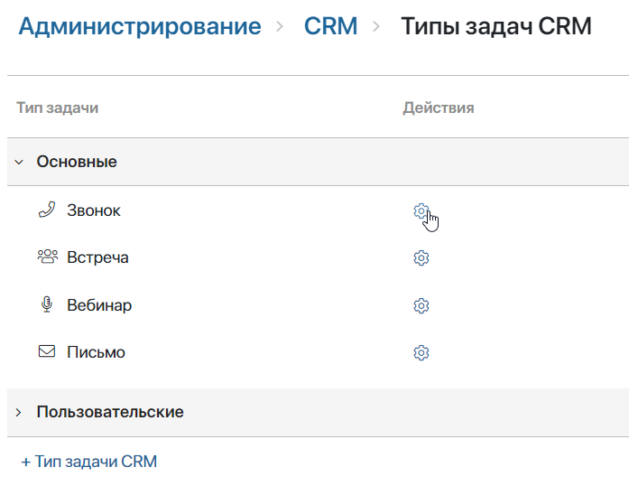
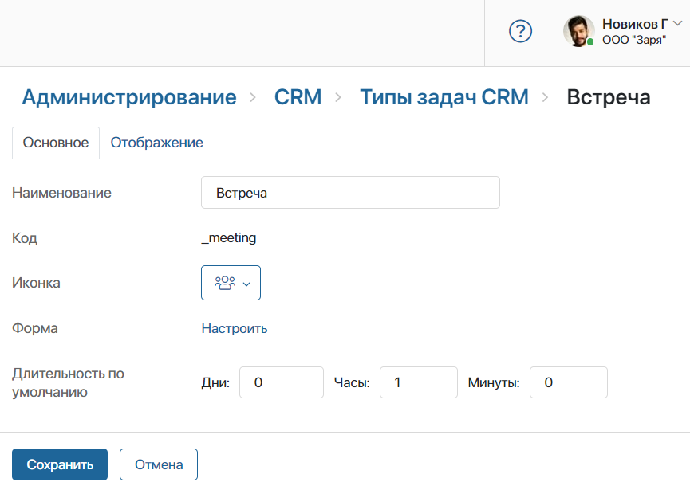
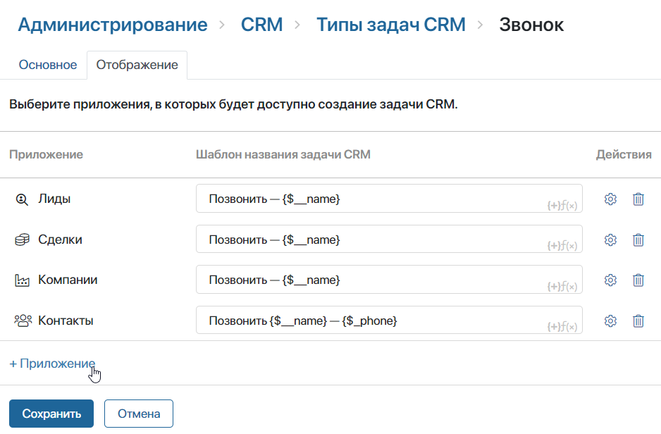
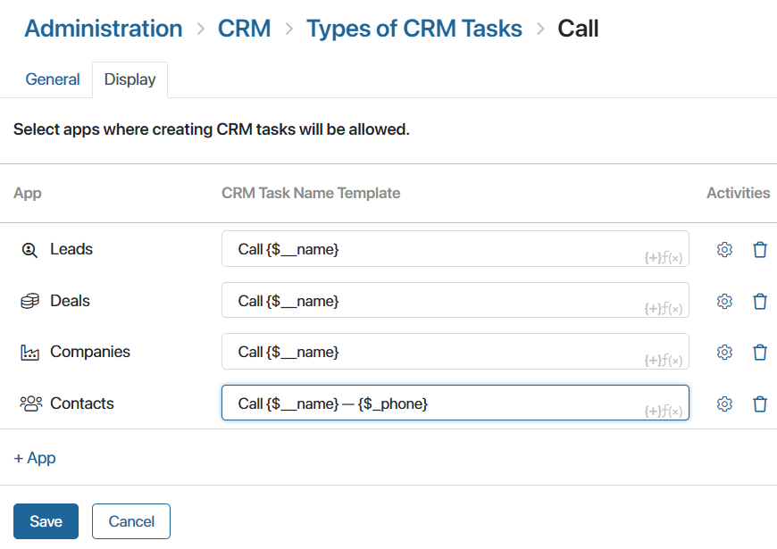
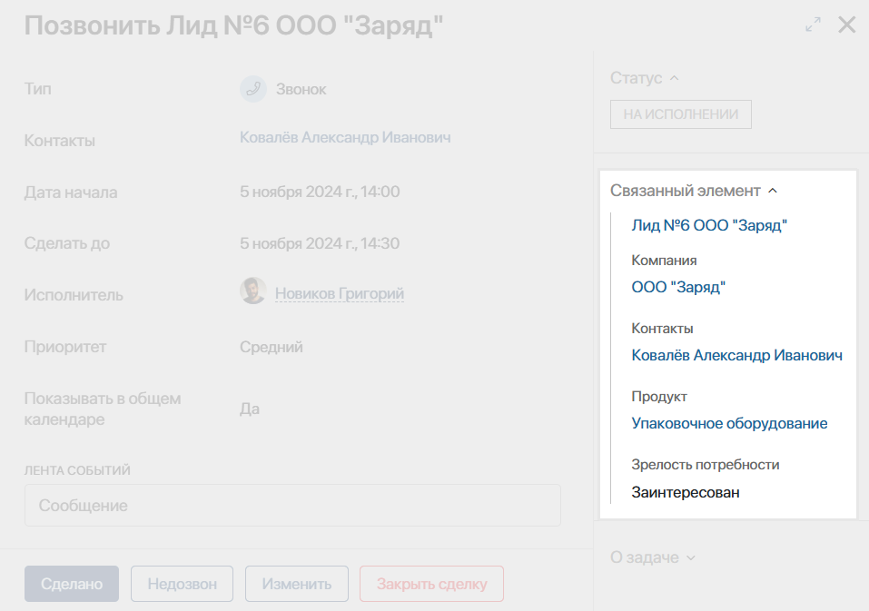
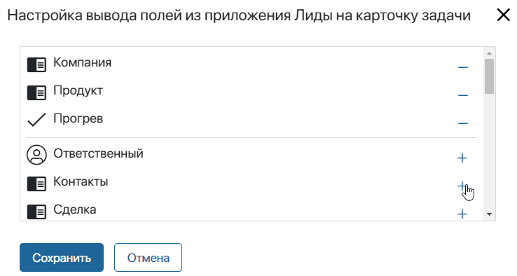

Задачи CRM помогают организовать работу отдела продаж с клиентами. Они позволяют отслеживать деятельность менеджеров по лидам, сделкам, компаниям, контактам и т. д.
По умолчанию в системе доступны задачи CRM следующих типов: Звонок, Встреча, Вебинар и Письмо. Вы можете изменить их настройки, а также создать пользовательские типы задач. Для любого типа задач CRM можно установить:
- название;
- иконку;
- стандартную продолжительность;
- набор полей и кнопок в карточках задач;
- шаблон наименования задач;
- приложения, по элементам которых можно создавать задачи.
начало внимание
Задачи доступны при активации одного из платных решений CRM, в которые включена работа с задачами CRM. Настраивать типы задач могут только пользователи с лицензией такого решения.
конец внимание
Основные настройки задачи CRM
Пользователи, включённые в группу Администраторы, могут редактировать стандартные и пользовательские типы задач CRM.
Чтобы изменить настройки задачи, перейдите в раздел Администрирование > CRM > Типы задач CRM. На открывшейся странице напротив названия типа задач нажмите значок шестерёнки.

На вкладке Основное заполните поля:

- Наименование — задайте название типа задачи CRM;
- Код — в поле отображается код типа задачи CRM. Он задаётся при её создании, и его нельзя изменить;
- Иконка — выберите значок, который отобразится рядом с названием типа задачи для удобного визуального поиска;
- Форма — вы можете изменить внешний вид карточки задачи CRM: настроить поля, отображаемые при её создании, просмотре и редактировании, а также добавить кнопки. Подробнее читайте в статье «Настройка карточек задачи CRM»;
- Длительность по умолчанию — установите стандартную продолжительность выполнения задачи в днях, часах и минутах. При создании задачи пользователь сможет установить другой срок.
Чтобы применить настройки, нажмите внизу страницы кнопку Сохранить.
Отображение задачи CRM в приложениях
Администратор системы может:
- указать, по элементам каких приложений назначается задача CRM;
- установить шаблон названия задачи для каждого приложения;
- выбрать, какую информацию из приложения отображать в карточке задачи.
Настроить доступность задачи в приложениях
По умолчанию задачу CRM можно назначить по элементам приложений Лиды, Сделки, Компании и Контакты. Чтобы изменить список приложений, для которых доступна задача:
- Перейдите в раздел Администрирование > CRM > Типы задач CRM.
- Напротив названия задачи в списке нажмите значок шестерёнки.
- На открывшейся странице перейдите на вкладку Отображение.
- Для добавления приложения в список нажмите + Приложение и выберите нужный вариант. Вы можете указать приложение любого типа — Стандартное, Событие или Документ.

- Для удаления приложения из списка нажмите напротив него значок корзины.
- Сохраните настройки.
Пользователи смогут назначать задачу CRM по элементам любого приложения в списке. Это можно сделать:
- из карточки элемента в виджете Связанные задачи. Обратите внимание, при этом будет недоступно отображение задач, назначенных по связанному элементу;
- в разделе Задачи > Задачи CRM.
Если вы удалили приложение из списка, назначенные ранее задачи сохранятся в системе, и пользователи смогут их выполнить.
Задать шаблон названия задачи CRM
При назначении задачи CRM её название заполняется автоматически. Вы можете задать свой шаблон наименования, например, если в компании установлены стандарты для названий задач. Пользователь сможет отредактировать название задачи при её создании.
Чтобы изменить шаблон:
- В разделе Администрирование > CRM > Типы задач CRM нажмите напротив задачи значок шестерёнки.
- Перейдите на вкладку Отображение.
- На открывшейся странице измените шаблон наименования задачи для каждого приложения. По умолчанию заданы следующие шаблоны:
- для задачи типа Звонок — Позвонить {$__name};
- для задачи типа Встреча — Провести встречу по {$__name};
- для задачи типа Вебинар — Провести вебинар для {$__name};
- для задачи типа Письмо — Написать письмо {$__name};
- для задачи пользовательского типа — Выполнить задачу по {$__name}.
В данных шаблонах {$__name} — это переменная с названием элемента приложения, по которому создаётся задача, например сделки или компании.

- Добавьте в текст шаблона контекстные переменные приложения, нажав значок {+}. Например, для задачи Звонок в поле Контакты задайте шаблон Позвонить {$__name} — {$_phone}. Тогда в названии звонка по контакту сразу отобразится номер телефона, указанный в переменной Рабочий телефон приложения Контакты.
Вы также можете добавить в шаблон функцию DateTime(), нажав значок f(x). Подробнее о создании шаблонов читайте в статье «Название элемента».
- Сохраните настройки.
начало внимание
Если задача CRM назначается в ходе бизнес-процесса, то шаблон её названия настраивается в соответствующем блоке этого процесса.
конец внимание
Отобразить поля приложения в карточке задачи CRM
Задачи CRM назначаются по элементам приложений, например по сделкам, лидам, компаниям. Поля приложения можно показывать на боковой панели задачи, чтобы исполнитель видел всю необходимую информацию без перехода в карточку элемента.

Чтобы выбрать поля для отображения:
- В разделе Администрирование > CRM > Типы задач CRM нажмите напротив задачи CRM значок шестерёнки.
- Перейдите на вкладку Отображение.
- Нажмите напротив названия приложения значок шестерёнки.
- В открывшемся окне добавьте поля в список.

- Нажмите Сохранить.
Сотрудник увидит указанную информацию на боковой панели карточки задачи. Если в карточке элемента поле не заполнено, в задаче оно будет скрыто.